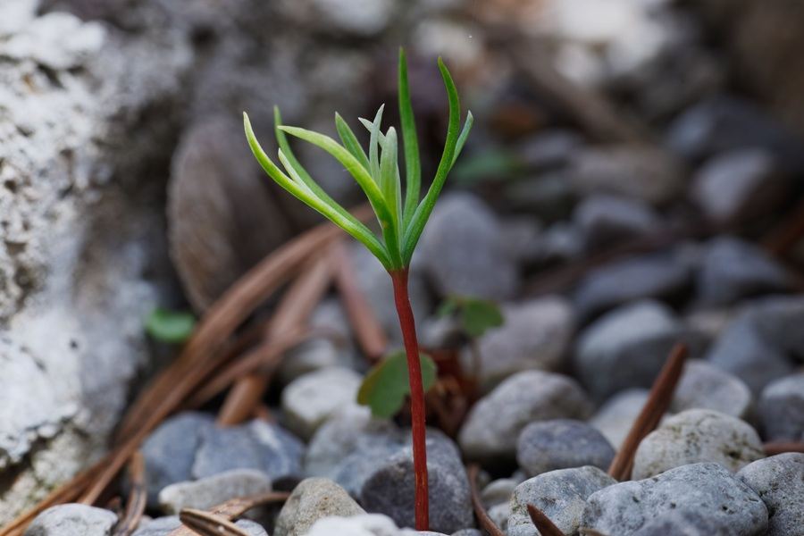

When I was diagnosed with cancer, my world crumbled around me. Suddenly, I was being ushered from one appointment to the next; endless scans, bloodwork, surgery to insert my port, and five months of aggressive chemotherapy. I had very little control over what was happening to me.
In reality, I had exactly two choices:
1. Keep moving forward with the treatment plan to give myself the
best chance of survival.
2. Give up, quit, and surrender to a disease that was actively
growing inside me.
Since I have every intention of living to the ripe old age of 112, Option 2 was never truly an option.
"We make the best decisions for ourselves when we make them for ourselves. When you align your actions with your deepest core beliefs, you unlock a level of resilience you didn't know you possessed."
Making the Impossible Choice
Truthfully, I never wanted chemotherapy. I had never built real preventative measures into my life, and making my body sick in order to make it better felt counterintuitive and terrifying. After my second treatment, when the brutal side effects settled in, I hit a wall and almost gave up. When I voiced how much I wanted to stop, I was gently given a reality check: "It's this or die."
Again, I chose life.
During that time, well-meaning people pushed homeopathic remedies, self-healing philosophies, and alternative paths onto me. While I believe in holistic wellness and the power of prevention, my cancer had progressed far beyond that. I needed medicine. I had to make the choice that aligned with my reality, not someone else's opinion.
Anchoring in Core Beliefs
We make the best decisions for ourselves when we make them for ourselves. When you align your actions with your deepest core beliefs, you unlock a level of resilience you didn't know you possessed. You find the strength to endure the impossible decisions, the terrifying treatments, and the circumstances others would run from.
We are far more capable than we realize. We can do the hard things—and we come out stronger on the other side.
Discussion & Stories